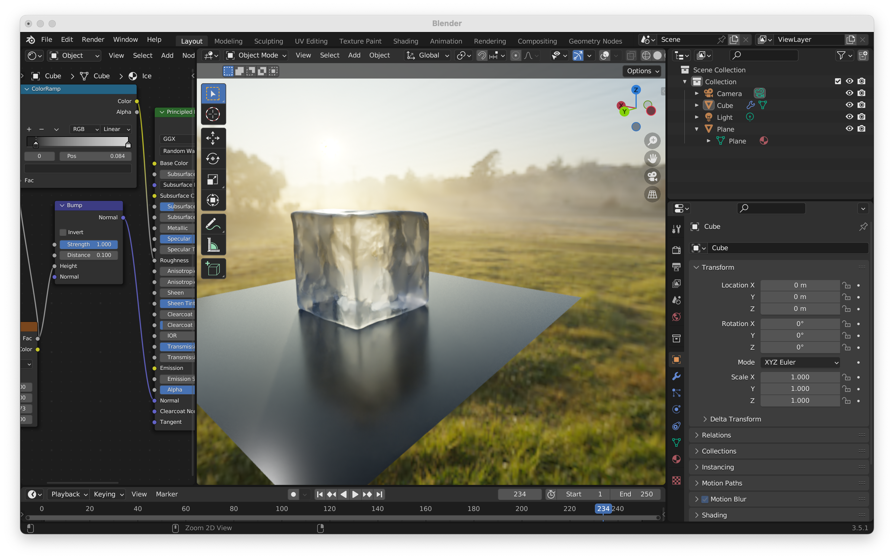
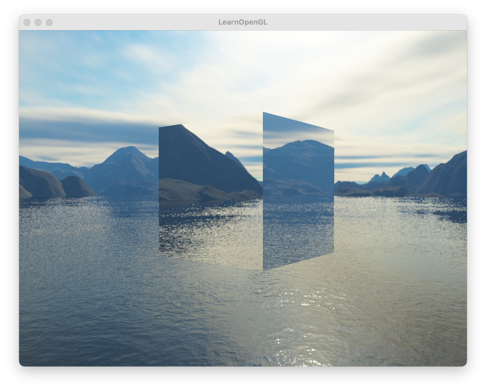

This project explores the concept creating an Ice Cube within a Skybox. The project pauses at a point where it could, in the future, create a fully fledged shader for Ice, which is why it called “Vanilla Ice” — servicing as a “base” for future ice inquiry.
After completing Project 4, I wanted to explore how I could use shaders to create a realistic piece of ice. And so I learned how to use Blender in order to prototype the end result of what I wanted. And so I opened up blender and learned how to make some realistic looking ice. Shaders really do wonders in this scene.
|

|
Reflecting on the prototype, I thought about what knowledge I was missing. What came to mind was reflection, refaction and environment lighting. Those were the two features that I did not implement in project 3-2. And so I went back to Project 3-2 and implemented those last two features so that I can have an intuitive understanding of how to implement those features in my pursuit of ice.
After implementing these features, I looked at my Blender prototype and I began searching for ways to implement it with the ideas of reflection and refraction with environment lighting. And so ultimately this led me to the Skybox.
By using a skybox and a cube within the box I began exploring how I could eventually make this cube into a piece of ice. Using “learn opengl”’s tutorial on how to create cubemaps, I began focusing on modifying the shaders of the cube itself to see how I could generate a more ice texture. As you can see, I ultimately modified the Shader of the cube to have it be slightly transparent and modied the refractive index to be that of Ice which is 1.309.
The project’s progress takes a pause here, which is why I playfully have named this project Vanilla Ice, due to it serving as a “base” for future explorations in developing shaders for Ice within a skybox.
Most of the problems encountered in this project were related to c++ tooling, fortunately I was able to overcome the initial pain of settting up an opengl project with a boilerplate from the github repository Glitter and also referencing the learn open gl solutions here.
I think the first lesson is — don’t set up an opengl project alone or from scratch. Luckily I found great repositories and tutorials to expedite my progress.
Prototyping the end result with Blender first was a great decision. While prototyping the ice I saw what components I would eventually need to build into the shader. It served as a Visual Unit Test you could say. And it allowed me to get an intuitive sense of what components to focus on.
|

|
Glitter: Boiler Plate for OpenGL
LearnOpenGL: Solutions for OpenGl tutorials
Learn Open GL Tutorial — Cubemaps (skybox)
Learn OpenGl family - they provided the starter code for the implementation of the Skybox that I could build upon
Christopher Franco - Modified the Shader to provide a transparent ice appearance to the cube within the skybox. Also implemented two additional features from project 3-2 - “Part 1: Mirror and Glass Materials” and “Part 3: Environment Light” in order to provide intition and insight as to how to move forward with building the prototype from Blender. Also built the prototype of the realistic looking ice using Shaders in Blender.